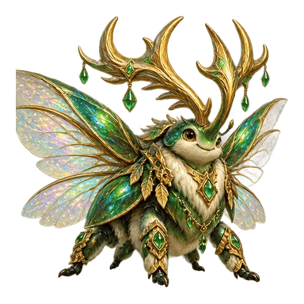

<!doctype html>
<html lang="zh-Hans">
<meta charset="utf-8"><meta name="viewport" content="width=device-width, initial-scale=1">
<title>神兽声音 · 男女声试听</title>
<style>
*{box-sizing:border-box}body{margin:0;background:#f5f5ed;color:#183d35;font-family:system-ui,'Microsoft YaHei',sans-serif}main{max-width:920px;margin:auto;padding:36px 22px}header{display:flex;justify-content:space-between;gap:16px;align-items:center}.eyebrow{letter-spacing:.18em;font-size:11px;font-weight:800;color:#5a796d}.edition{font-size:12px;background:#e1ecd9;border-radius:30px;padding:8px 13px}h1{font-size:clamp(28px,6vw,44px);margin:20px 0 10px;letter-spacing:-.04em}.intro{line-height:1.8;color:#59736a;max-width:630px}.cards{display:grid;grid-template-columns:1fr 1fr;gap:20px;margin:26px 0}.card{position:relative;border:1px solid #d2dfd0;border-radius:24px;padding:22px;background:#fffef9;overflow:hidden}.card[data-gender=female]{background:#fffaf5;border-color:#e6d9ce}.card.playing{box-shadow:0 0 0 3px #a4c9ad}.tag{font-size:11px;font-weight:700;letter-spacing:.1em;color:#6e8279}.card h2{font-size:23px;margin:8px 0 0}.card small{color:#6d8078}.pet{display:block;width:100%;height:190px;object-fit:contain;margin:2px 0 8px}.card.playing .pet{animation:bob .8s ease-in-out infinite alternate}.lines{font-size:14px;line-height:1.9;margin:0 0 16px;min-height:80px}button,select{font:inherit}button{cursor:pointer;border:0;border-radius:13px;padding:12px 18px;background:#245c4b;color:white;font-weight:700;min-height:44px}.card button{width:100%}.card[data-gender=female] button{background:#895b4c}.status{display:block;min-height:24px;padding-top:7px;font-size:12px;color:#57756a}.controls{display:flex;align-items:center;flex-wrap:wrap;gap:12px;padding:18px 0;border-top:1px solid #d2ded1}.controls button{background:#e3eadf;color:#234b3b}.controls label{margin-right:auto;font-size:13px}select{border:1px solid #b9cabb;border-radius:9px;background:#fffef9;padding:9px;color:#234b3b;margin-left:7px}footer{color:#687d72;font-size:12px;line-height:1.9;margin-top:12px}.note{padding:14px 17px;border-radius:13px;background:#eaf0e4;font-size:13px;line-height:1.8}@keyframes bob{to{transform:translateY(-6px) rotate(1deg)}}@media(prefers-reduced-motion:reduce){.card.playing .pet{animation:none}}@media(max-width:580px){main{padding:24px 16px}.cards{grid-template-columns:1fr;gap:16px}.pet{height:155px}.lines{min-height:0}.card{padding:20px}h1{margin-top:24px}.intro{font-size:14px}}
</style>
<main>
<header><span class="eyebrow">ECO PETS / VOICE STUDIO</span><span class="edition">第一轮 · 试听</span></header>
<h1>让神兽开口说话</h1>
<p class="intro">先听同一句问候，比较男声和女声的感觉。点一个播放，另一个就会停下。</p>
<section class="cards" aria-label="男女声试听">
<article class="card" data-gender="male"><span class="tag">VOICE 01 · MALE</span><h2>男声候选</h2><small>Theo · 活泼语气</small><p class="lines">主人，你终于来啦！<br>今天也一起加油吧！<br>收集奖励卡，换我来守护你！</p><button type="button" data-play="male">▶ 听男声</button><span class="status" role="status"></span></article>
<article class="card" data-gender="female"><span class="tag">VOICE 02 · FEMALE</span><h2>女声候选</h2><small>Ceecee · 活泼语气</small><p class="lines">主人，你终于来啦！<br>今天也一起加油吧！<br>收集奖励卡，换我来守护你！</p><button type="button" data-play="female">▶ 听女声</button><span class="status" role="status"></span></article>
</section>
<div class="controls"><label>示范造型<select id="stage"><option value="5">传奇形态</option><option value="1">幼生形态</option></select></label><button id="stop" type="button">停止播放</button><button id="mute" type="button" aria-pressed="false">静音：关</button></div>
<div class="note">声音跟着学生：男生配男声，女生配女声。换宠物、进化后保留配置。<br>第一轮先共用这句问候，其他阶段的专属对白尚未配音。</div>
<footer>这两段由 HeyGen 生成，供你判断音色和动漫感。此页只用示范角色，不读取或修改学生资料。</footer>
</main>
<script>let muted=false;window.EcoMythicAudio={readPreference:()=>!muted};</script>
<script src="pet-character-voice.js"></script><script src="pet-owner-voice.js"></script>
<script>
const cards=[...document.querySelectorAll('.card')];
function reset(){PetOwnerVoice.stop();}
for(const button of document.querySelectorAll('[data-play]'))button.onclick=()=>{
 reset();const gender=button.dataset.play,card=button.closest('.card');
 if(muted){card.querySelector('.status').textContent='已静音，请先关闭静音';return;}
 PetOwnerVoice.speak({id:'demo-'+gender,pet:{voiceGender:gender,species:{id:'hornbeetle'},displayStageIndex:Number(document.querySelector('#stage').value)}});
};
window.addEventListener('pet-character-voice',e=>{const card=cards.find(c=>'demo-'+c.dataset.gender===e.detail.studentId);if(!card)return;card.classList.toggle('playing',e.detail.state==='playing');card.querySelector('.status').textContent=({loading:'准备播放…',playing:'正在说话…',ended:'播放完成',error:'暂时无法播放，请再试一次'})[e.detail.state]||'';});
document.querySelector('#stop').onclick=reset;
document.querySelector('#mute').onclick=e=>{muted=!muted;if(muted)reset();e.currentTarget.textContent='静音：'+(muted?'开':'关');e.currentTarget.setAttribute('aria-pressed',String(muted));};
document.querySelector('#stage').onchange=e=>{reset();for(const img of document.querySelectorAll('.pet'))img.src='assets/pet-park/evolution/hornbeetle/'+e.target.value+'.webp';};
</script>
</html>
